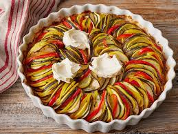

CARDAPIO RESTAURANTE
para mais detalhes chamar o garçom!
para conhecer melhor o prato da casa "ratatouille".Clique no link abaixo!
PRATOS E BEBIDAS
PREÇOS
PIZZAS(CALABRESA, QUATRO QUEIJOS, BROCOLIS, BACON E CHOCOLATE)
40 REAIS
RATATOUILLE
55 REAIS
AGUA
4 REAIS
REFRIGERANTE(COCA, PEPSI E FANTA)
5 REAIS
PRATO DA CASA

DESCUBRA MAIS AQUI!
RECEITA E HISTORIA